Step 5 Report: Final Prediction Fill
Predictions on the full dataset, including rows that originally had unknown labels.
Prediction Summary
| selection_type | soft_voting |
|---|---|
| selected_models | ['model_a', 'model_b'] |
| rows_total | 8 |
| rows_unknown_original | 1 |
| confidence_method | within-model ranks |
| confidence_level_counts | {'HIGH': 4, 'MEDIUM': 2, 'LOW': 2} |
| inspection_include_outlier | True |
| inspection_outlier_column_available | True |
| inspection_outlier_adjusted_count | 4 |
| inspection_need_counts | {'MEDIUM': 3, 'LOW': 2, 'HIGH': 1, 'MEDIUM_HIGH': 1, 'VERY_LOW': 1} |
| inspection_check_type_counts | {'INSUFFICIENT_EO_EVIDENCE': 4, 'NONE': 3, 'DECLARATION_CONFLICT': 1} |
| label_prediction_status_counts | {'SAME': 4, 'DIFFERENT': 3, 'NO_DECLARATION': 1} |
| inspection_score_mean | 37.3750 |
| validation_rows_with_reference | 7 |
| correct_predictions | 4 |
| incorrect_predictions | 3 |
| prediction_accuracy | 0.5714 |
| borda_agreement_rows | 5 |
| borda_agreement_rate | 0.7143 |
| need_to_check_rows | 2 |
| need_to_check_rate_among_borda_agreement | 0.4000 |
| class_reliability_role | Inspection priority |
| class_reliability_enabled_for_inspection | True |
| class_reliability_inspection_status | Applied to inspection priority |
| class_reliability_inspection_rows | 7 |
Prediction Preview
| parcel_code | label | label_prediction | label_filled | prediction_max_probability | prediction_confidence_level | prediction_confidence_valid | prediction_confidence_reason | prediction_mean_borda | prediction_rank_range | prediction_borda_winner | prediction_rank_confidence_level | prediction_class_oof_precision | prediction_class_reliability_level | prediction_class_reliability_valid | prediction_borda_margin | prediction_top1_agreement | data_reliability_score | geom_shape_complexity_score | confidence_risk | data_risk | geometry_risk | inspection_score | inspection_need_base | inspection_need | inspection_priority_label | inspection_rule | is_outlier | inspection_need_before_outlier | inspection_outlier_adjusted | inspection_class_reliability_applied | inspection_check_type | label_prediction_status | inspection_reasons | prediction_needs_review |
|---|---|---|---|---|---|---|---|---|---|---|---|---|---|---|---|---|---|---|---|---|---|---|---|---|---|---|---|---|---|---|---|---|---|---|
| 1 | A | A | A | 0.9100 | HIGH | True | rank_confidence_high | 8.0000 | 1.0000 | A | HIGH | 0.9300 | HIGH | True | 18.0000 | 1.0000 | 0.9500 | 1.0000 | 0.0000 | 0.0500 | 0.1250 | 3.1300 | LOW | LOW | Low | R01 | True | VERY_LOW | True | True | NONE | SAME | OUTLIER_PRIORITY_INCREASE | False |
| 2 | A | B | A | 0.7600 | HIGH | True | rank_confidence_high | 7.0000 | 3.0000 | B | HIGH | 0.7400 | MEDIUM | True | 12.0000 | 0.8000 | 0.8200 | 1.4000 | 0.0000 | 0.1800 | 0.5000 | 12.0000 | LOW | HIGH | High | R14 | True | MEDIUM_HIGH | True | True | DECLARATION_CONFLICT | DIFFERENT | DECLARATION_CONFLICT|MEDIUM_GEOMETRY_COMPLEXITY|MEDIUM_CLASS_RELIABILITY|OUTLIER_PRIORITY_INCREASE | False |
| 3 | B | B | B | 0.7200 | MEDIUM | True | rank_confidence_high | 6.0000 | 5.0000 | A | MEDIUM | 0.8200 | HIGH | True | 4.0000 | 0.6000 | 0.7400 | 1.8000 | 0.5000 | 0.2600 | 0.6250 | 45.8800 | MEDIUM | MEDIUM | Medium | R10 | False | MEDIUM | False | True | INSUFFICIENT_EO_EVIDENCE | SAME | INSUFFICIENT_EO_EVIDENCE|MEDIUM_MODEL_CONFIDENCE|MEDIUM_DATA_RELIABILITY|MEDIUM_GEOMETRY_COMPLEXITY | False |
| 4 | B | A | B | 0.6100 | LOW | True | rank_confidence_high | 5.0000 | 7.0000 | B | LOW | 0.7400 | MEDIUM | True | 3.0000 | 0.5000 | 0.5500 | 2.5000 | 1.0000 | 0.4500 | 0.8750 | 84.3700 | HIGH | MEDIUM | Medium | R19 | None | MEDIUM | False | True | INSUFFICIENT_EO_EVIDENCE | DIFFERENT | DECLARATION_PREDICTION_DIFFERENCE|INSUFFICIENT_EO_EVIDENCE|LOW_MODEL_CONFIDENCE|LOW_DATA_RELIABILITY|HIGH_GEOMETRY_COMPLEXITY|MEDIUM_CLASS_RELIABILITY | True |
| 5 | C | C | C | 0.8800 | HIGH | True | rank_confidence_high | 8.5000 | 2.0000 | C | HIGH | 0.8900 | HIGH | True | 16.0000 | 1.0000 | 0.9100 | 1.2000 | 0.0000 | 0.0900 | 0.3750 | 7.8700 | LOW | LOW | Low | R01 | True | VERY_LOW | True | True | NONE | SAME | OUTLIER_PRIORITY_INCREASE | False |
| 6 | C | A | C | 0.6700 | MEDIUM | True | rank_confidence_high | 6.5000 | 4.0000 | A | MEDIUM | 0.9300 | HIGH | True | 6.0000 | 0.7000 | 0.6800 | 2.1000 | 0.5000 | 0.3200 | 0.7500 | 49.2500 | MEDIUM | MEDIUM | Medium | R20 | False | MEDIUM | False | True | INSUFFICIENT_EO_EVIDENCE | DIFFERENT | DECLARATION_PREDICTION_DIFFERENCE|INSUFFICIENT_EO_EVIDENCE|MEDIUM_MODEL_CONFIDENCE|MEDIUM_DATA_RELIABILITY|HIGH_GEOMETRY_COMPLEXITY | False |
| 7 | None | B | B | 0.5500 | LOW | True | rank_confidence_high | 4.0000 | 8.0000 | B | LOW | 0.8200 | HIGH | True | 2.0000 | 0.4000 | 0.4200 | 3.2000 | 1.0000 | 0.5800 | 1.0000 | 89.5000 | HIGH | MEDIUM_HIGH | Medium–High | NO_DECLARATION | True | MEDIUM | True | False | INSUFFICIENT_EO_EVIDENCE | NO_DECLARATION | INSUFFICIENT_EO_EVIDENCE|LOW_MODEL_CONFIDENCE|LOW_DATA_RELIABILITY|HIGH_GEOMETRY_COMPLEXITY|NO_DECLARATION|OUTLIER_PRIORITY_INCREASE | True |
| 8 | 1.0000 | 1 | 1 | 0.9300 | HIGH | True | rank_confidence_high | 9.0000 | 1.0000 | 1 | HIGH | 0.9600 | HIGH | True | 20.0000 | 1.0000 | 0.8700 | 1.1000 | 0.0000 | 0.1300 | 0.2500 | 7.0000 | LOW | VERY_LOW | Very Low | R01 | False | VERY_LOW | False | True | NONE | SAME | NONE | False |
How Prediction Confidence and Inspection Priority Use Evidence
Prediction confidence describes model support. Class reliability describes the predicted class's historical out-of-fold precision and is a separate input to inspection priority. The status and parcel count below show its actual use in this saved run. An enabled setting can have zero applied parcels when the required evidence is unavailable.
| Signal | Evidence | Role | Use in this run |
|---|---|---|---|
| Prediction confidence | within-model ranks | Confidence-only review flag and confidence level when available | Reported in prediction outputs |
| Class reliability | Frozen OOF precision and support of the predicted class | Inspection priority decision table | Applied to inspection priority |
Prediction Diagnostics
Use Confidence Levels to audit model agreement and prediction errors. Use Inspection Priority to plan parcel checks using confidence, class reliability, EO data reliability, geometry, declaration agreement, and the optional EDA is_outlier adjustment.
Borda Consensus and Prediction Correctness
Correctness is evaluated only for parcels with a known original reference label. The four groups separate whether the Borda winner supports the final prediction from whether that prediction matches the reference label. Unlabeled fill rows are excluded.
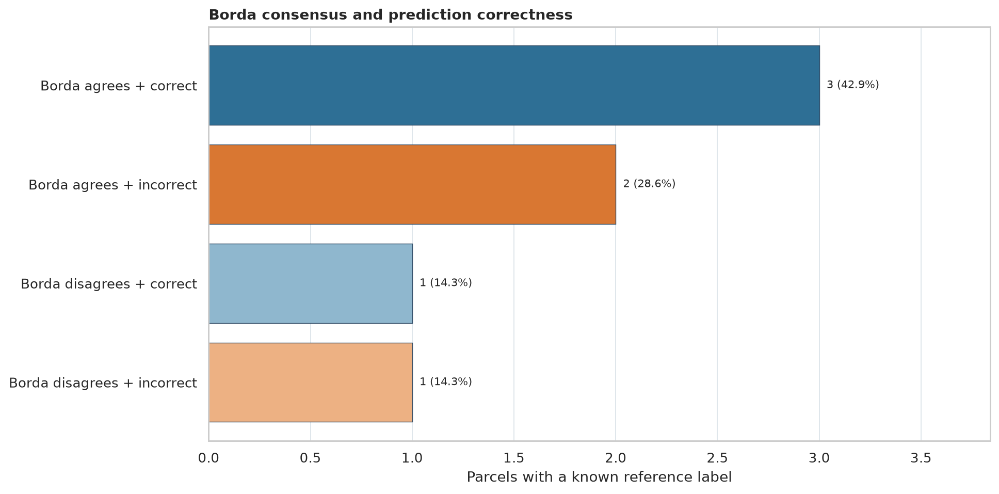
Confidence Metric Median Comparison
Medians compare correct predictions with the needs-check cohort after restricting both groups to rows where Borda agrees with the final prediction. The final column is Needs check minus Correct; warm cells are positive differences and cool cells are negative differences. For rank range, lower values indicate tighter model agreement.
| confidence_metric | Correct | Needs check | Needs check minus Correct |
|---|---|---|---|
| Maximum predicted probability | 0.910 | 0.715 | -0.195 |
| Borda winner margin | 18.000 | 9.000 | -9.000 |
| Mean Borda score | 8.500 | 6.750 | -1.750 |
| Rank range (lower is better) | 1.000 | 3.500 | 2.500 |
| Top-1 model agreement | 1.000 | 0.750 | -0.250 |
| OOF precision of predicted class | 0.930 | 0.835 | -0.095 |
Distribution Comparison
This comparison uses known-label parcels where the Borda winner agrees with the final prediction. Blue represents correct predictions and orange represents incorrect predictions marked Needs check. In every panel, the horizontal axis is the confidence metric and the vertical axis is the share of that group at or below the selected value. For example, reading upward from an x value shows what percentage of Correct and Needs check parcels have a metric no greater than that value. For metrics where higher is more favorable, an orange curve that rises earlier or lies above the blue curve indicates that Needs check cases tend to have lower values. Rank range is reversed: lower is more favorable, so an earlier blue curve indicates tighter model agreement among correct predictions. A large gap between curves means the metric separates the groups well; substantial overlap means the metric is weak on its own. These curves compare group distributions and should not be read as the probability that an individual prediction is wrong.
| Metric | More favorable | Meaning |
|---|---|---|
| Maximum predicted probability | Higher | Probability assigned to the final predicted class. |
| Borda winner margin | Higher | Separation between the Borda winner and runner-up. |
| Mean Borda score | Higher | Overall ensemble support for the predicted class. |
| Rank range | Lower | Smaller values mean models ranked the class more consistently. |
| Top-1 model agreement | Higher | Share of models selecting the same class as their first choice. |
| OOF precision of predicted class | Higher | Historical precision of that class in out-of-fold validation. |
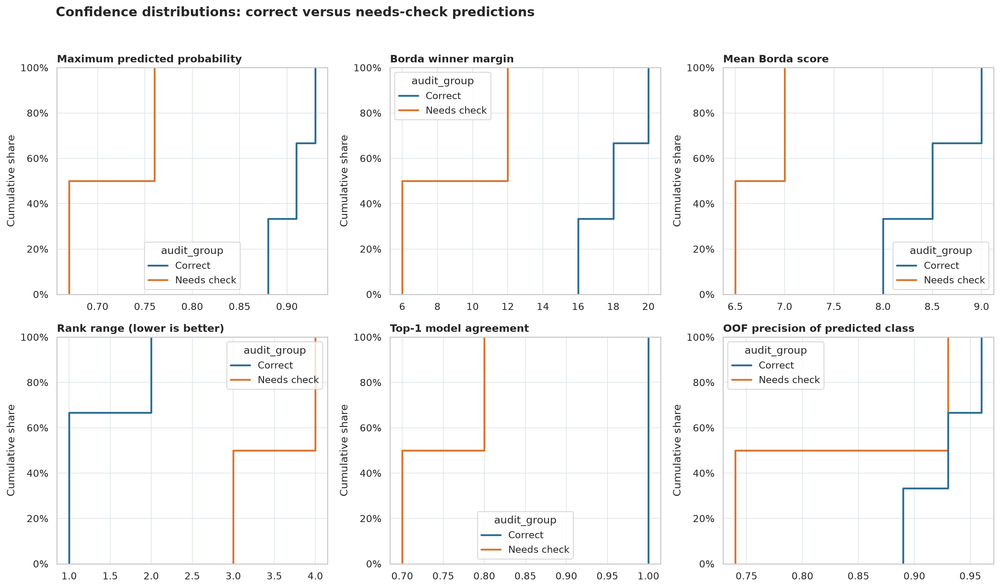
Joint Probability-Consensus Behavior
The left panel estimates empirical needs-check risk within sufficiently populated probability-Borda hexagons; the right panel shows the supporting parcel density. Read the panels together so rare combinations are not mistaken for dominant failure modes.
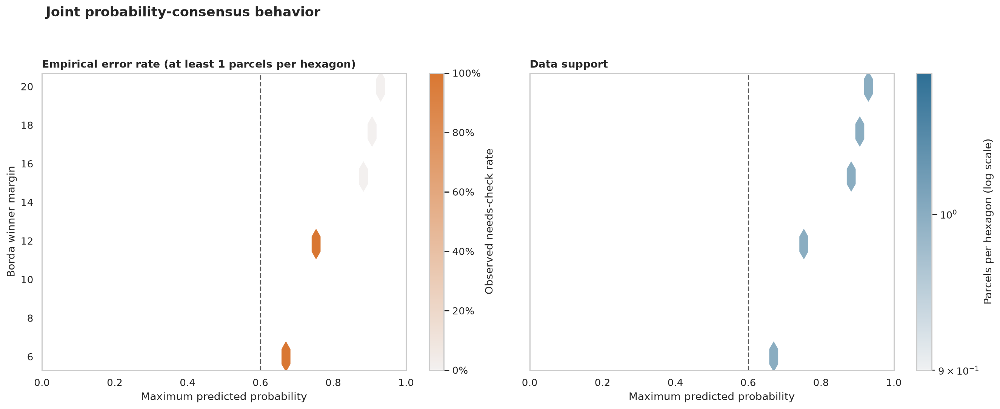
Class-Level Confidence Risk
Each point is a predicted class: horizontal position is median maximum probability, vertical position is observed needs-check rate, point size is parcel support, and color is median out-of-fold class precision. Labels prioritize classes contributing the largest high-confidence error burden.
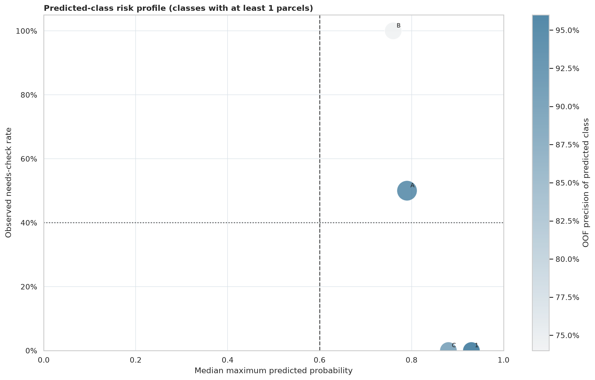
Class Reliability by Predicted Class
This view shows the class-reliability signal used by the inspection policy. Each row groups parcels by predicted class and reports the rate that needs checking, the median out-of-fold precision for that class, and the support count. When class_reliability_enabled is false, the same class-reliability table is still shown as a diagnostic, but it does not enter inspection policy. Class reliability never lowers rank confidence. This is the same view previously described as Need-to-Check Rate by Predicted Class.
| predicted_class | total | need_to_check | median_probability | median_borda_margin | confident_error_burden | need_to_check_rate_percent | oof_precision_percent |
|---|---|---|---|---|---|---|---|
| A | 2 | 1 | 0.7900 | 12.0000 | 0.7900 | 50.0000 | 93.0000 |
| B | 1 | 1 | 0.7600 | 12.0000 | 0.7600 | 100.0000 | 74.0000 |
| 1 | 1 | 0 | 0.9300 | 20.0000 | 0.0000 | 0.0000 | 96.0000 |
| C | 1 | 0 | 0.8800 | 16.0000 | 0.0000 | 0.0000 | 89.0000 |
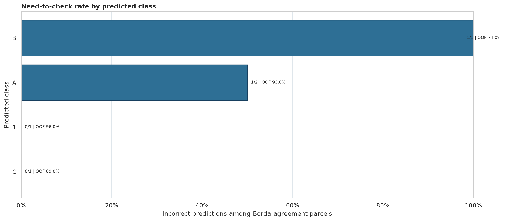
Confidence Components of Incorrect Consensus Predictions
For need-to-check parcels, the heatmap crosses predicted-class reliability with rank/ensemble confidence. The interactive flow then follows predicted class through class reliability, rank confidence, and final confidence. Large flows reveal combinations that repeatedly produce confident errors rather than isolated cases.
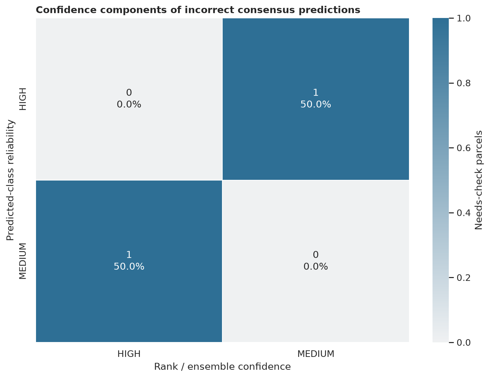
Need-to-Check Class Confusions
The matrix focuses on the twelve labels most often involved in incorrect Borda-consensus predictions. Color is normalized within each displayed true class while cell annotations show exact parcel counts, making systematic substitutions visible without losing support.
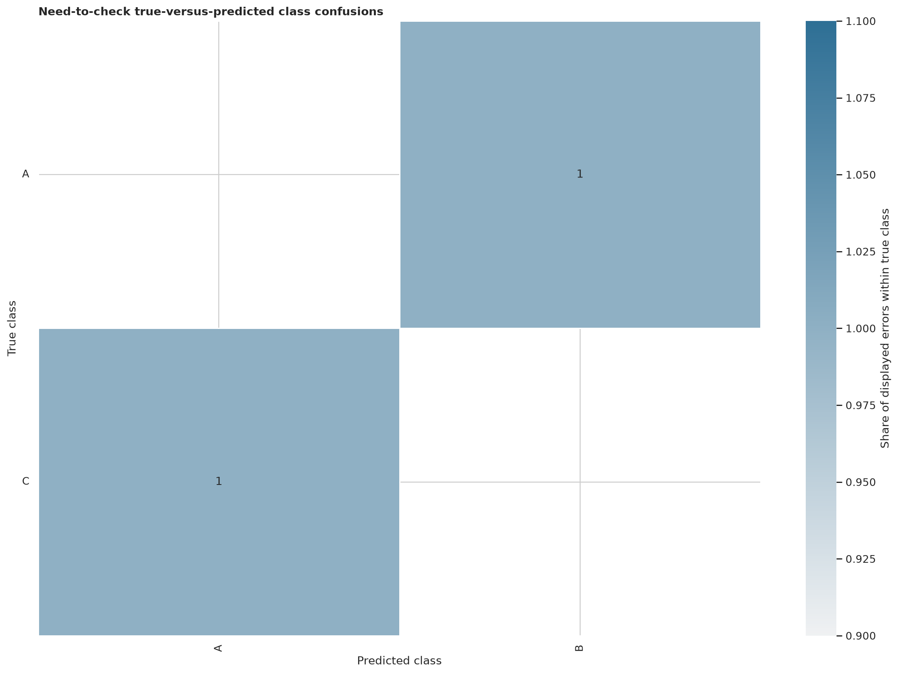
Inspection Priority: Confidence, Data Quality, and Geometry
Inspection score combines three independent uncertainty signals on a 0-100 scale. The scatter shows data reliability against the score, color identifies prediction confidence, point size represents relative geometry risk, and marker shape distinguishes declaration agreement. The numeric score is diagnostic only and never assigns priority. The decision table directly combines class reliability, rank confidence, data reliability, geometry, and declaration agreement. Geometry interior-area ratio is not added separately because it is already incorporated in geom_shape_complexity_score. The optional is_outlier adjustment then raises final priority by one band; it does not change this diagnostic score or confidence.
| Component | Definition | Weight |
|---|---|---|
| Model risk | HIGH=0, MEDIUM=0.5, LOW=1 | 0.6000 |
| Data risk | 1 - data_reliability_score | 0.2500 |
| Geometry risk | Percentile rank of geom_shape_complexity_score | 0.1500 |
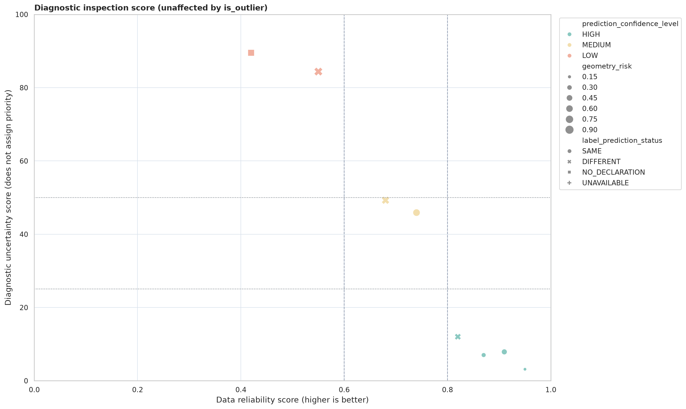
EDA is_outlier: Base versus Final Inspection Priority
The matrix counts saved decisions before and after the optional outlier adjustment. With inspection_include_outlier=True, is_outlier=True raises priority one band, capped at Very High; Unknown remains unscored. Disabled, false, missing, or invalid flags leave priority unchanged. Diagonal cells are unchanged; off-diagonal cells show increases. The original inspection_rule is preserved, with inspection_need_before_outlier, inspection_outlier_adjusted, and reason OUTLIER_PRIORITY_INCREASE recording actual increases. Check type is preserved except NONE raised to Low–Medium becomes INSUFFICIENT_EO_EVIDENCE. Outliers alone do not establish declaration conflicts. All operational charts and queue ordering use final priority. The score and confidence plots are unaffected. If saved before-outlier fields are absent, this audit is unavailable; regenerate prediction quality first.
| VERY_HIGH | HIGH | MEDIUM_HIGH | MEDIUM | LOW_MEDIUM | LOW | VERY_LOW | UNKNOWN |
|---|---|---|---|---|---|---|---|
| 0 | 0 | 0 | 0 | 0 | 0 | 0 | 0 |
| 0 | 0 | 0 | 0 | 0 | 0 | 0 | 0 |
| 0 | 1 | 0 | 0 | 0 | 0 | 0 | 0 |
| 0 | 0 | 1 | 3 | 0 | 0 | 0 | 0 |
| 0 | 0 | 0 | 0 | 0 | 0 | 0 | 0 |
| 0 | 0 | 0 | 0 | 0 | 0 | 0 | 0 |
| 0 | 0 | 0 | 0 | 0 | 2 | 1 | 0 |
| 0 | 0 | 0 | 0 | 0 | 0 | 0 | 0 |
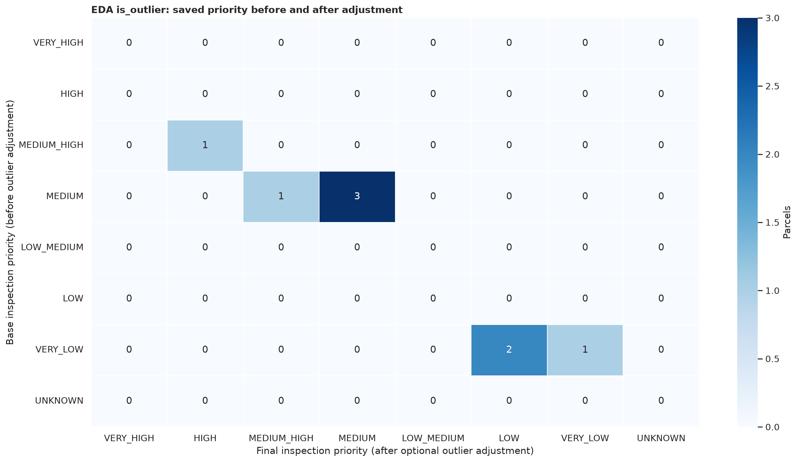
Inspection Score by Confidence and Data Reliability
This enlarged matrix preserves the previous confidence-by-reliability view. Each cell is the median label-independent inspection score for parcels in that combination; geometry risk still contributes to every parcel score and therefore to the displayed median. is_outlier does not change these scores.
| LOW | MEDIUM | HIGH |
|---|---|---|
| nan | nan | 7.4350 |
| nan | 47.5650 | nan |
| 86.9350 | nan | nan |
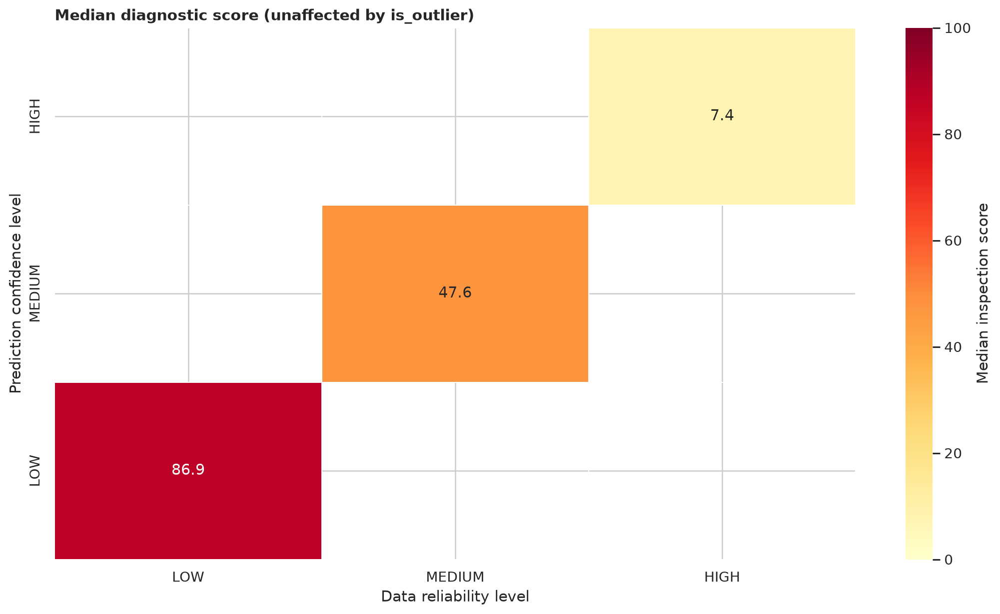
Operational Check Types
DECLARATION_CONFLICT identifies reliable EO evidence supporting a crop different from the farmer declaration. INSUFFICIENT_EO_EVIDENCE identifies parcels where confidence, observation coverage, class reliability, or geometry does not support a reliable verification, or an outlier adjustment raises a NONE row into review. These types are mutually exclusive.
| inspection_check_type | parcels | share_percent | median_inspection_score |
|---|---|---|---|
| DECLARATION_CONFLICT | 1 | 12.5000 | 12.0000 |
| INSUFFICIENT_EO_EVIDENCE | 4 | 50.0000 | 66.8100 |
| NONE | 3 | 37.5000 | 7.0000 |
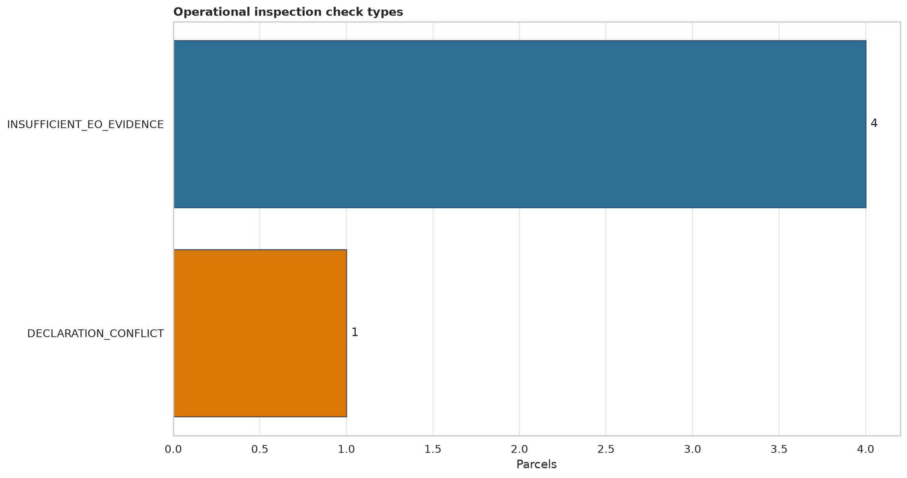
Final Inspection Need by Declaration Agreement
This matrix shows how agreement with the farmer declaration changes the operational priority. Seven ordered priority bands come from direct rules. The numeric uncertainty score does not determine the category or queue order. When inspection_include_outlier=True, is_outlier=True raises the matrix priority by one band, capped at Very High; Unknown stays unscored. False, missing, or unavailable outlier flags leave priority unchanged. The original matrix rule and inspection_need_before_outlier remain available alongside inspection_outlier_adjusted. Outlier escalation alone does not establish a declaration conflict.
| inspection_need | parcels | share_percent | median_inspection_score |
|---|---|---|---|
| HIGH | 1 | 12.5000 | 12.0000 |
| MEDIUM_HIGH | 1 | 12.5000 | 89.5000 |
| MEDIUM | 3 | 37.5000 | 49.2500 |
| LOW | 2 | 25.0000 | 5.5000 |
| VERY_LOW | 1 | 12.5000 | 7.0000 |
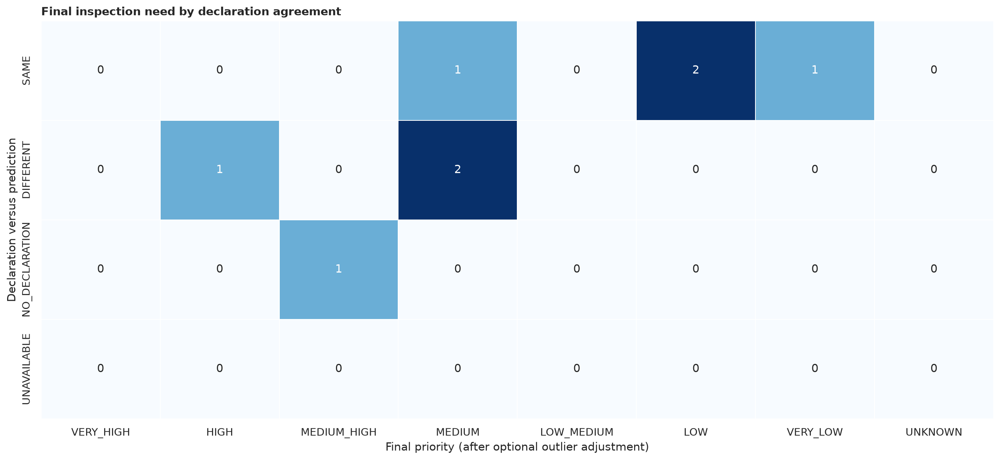
Data Reliability and Geometry Evidence
The heatmap reports the operational inspection rate for each data-reliability and geometry-quality combination. Cell support in the table should be considered before interpreting extreme rates.
| data_reliability_level | geometry_quality_level | parcels | needs_check | median_inspection_score | needs_check_rate_percent |
|---|---|---|---|---|---|
| HIGH | GOOD | 3 | 0 | 7.0000 | 0.0000 |
| HIGH | MODERATE | 1 | 1 | 12.0000 | 100.0000 |
| LOW | COMPLEX | 2 | 2 | 86.9350 | 100.0000 |
| MEDIUM | MODERATE | 1 | 1 | 45.8800 | 100.0000 |
| MEDIUM | COMPLEX | 1 | 1 | 49.2500 | 100.0000 |
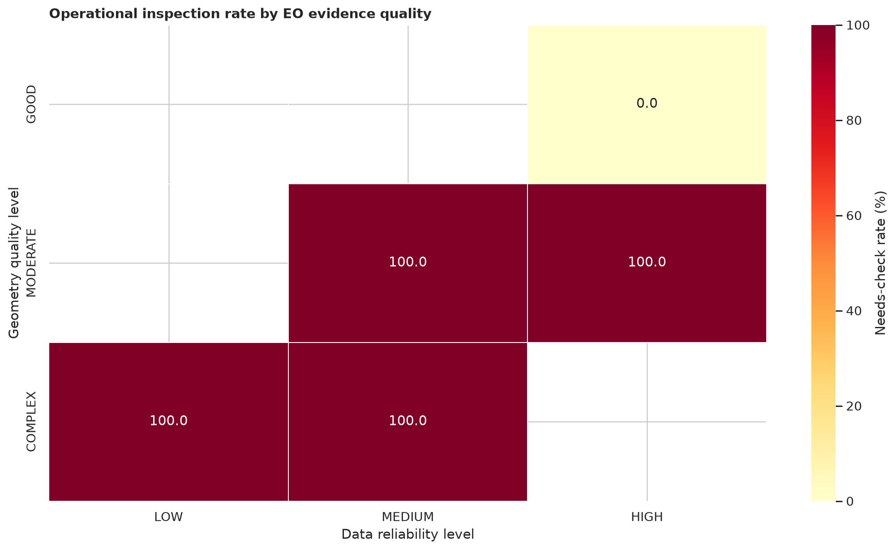
Operational Inspection Priority by Predicted Crop
Rates use every parcel predicted as each crop. Counts distinguish high-priority cases, reliable declaration conflicts, and parcels where EO evidence is insufficient. Small crop groups should be interpreted together with their parcel denominators.
| predicted_class | parcels | needs_check | high_or_very_high | declaration_conflicts | insufficient_eo_evidence | median_inspection_score | needs_check_rate_percent |
|---|---|---|---|---|---|---|---|
| B | 3 | 3 | 1 | 1 | 2 | 45.8800 | 100.0000 |
| A | 3 | 2 | 0 | 0 | 2 | 49.2500 | 66.6667 |
| 1 | 1 | 0 | 0 | 0 | 0 | 7.0000 | 0.0000 |
| C | 1 | 0 | 0 | 0 | 0 | 7.8700 | 0.0000 |
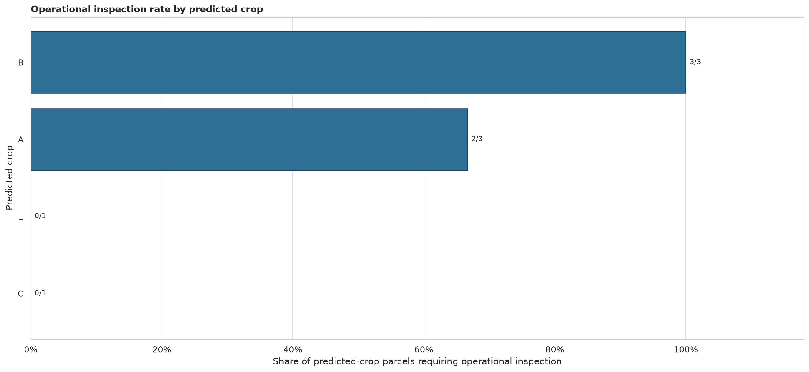
Reliable Declaration Conflicts
Only DECLARATION_CONFLICT parcels are included. Rows are farmer-declared crops and columns are model-predicted crops, allowing systematic, evidence-supported substitutions to be identified.
| B |
|---|
| 1 |
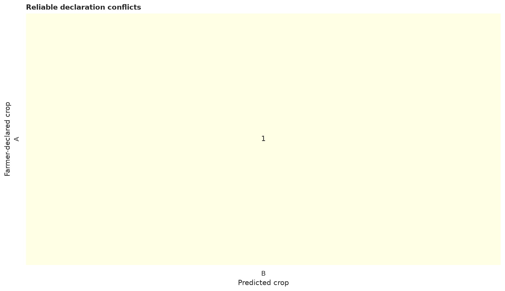
Confidence Review versus Operational Inspection Need
This cross-check shows where the confidence-only review flag and the composite operational policy agree or differ. Operational priority also uses class reliability, data reliability, geometry, farmer-declaration agreement, and the optional is_outlier adjustment.
| VERY_HIGH | HIGH | MEDIUM_HIGH | MEDIUM | LOW_MEDIUM | LOW | VERY_LOW | UNKNOWN |
|---|---|---|---|---|---|---|---|
| 0 | 1 | 0 | 2 | 0 | 2 | 1 | 0 |
| 0 | 0 | 1 | 1 | 0 | 0 | 0 | 0 |
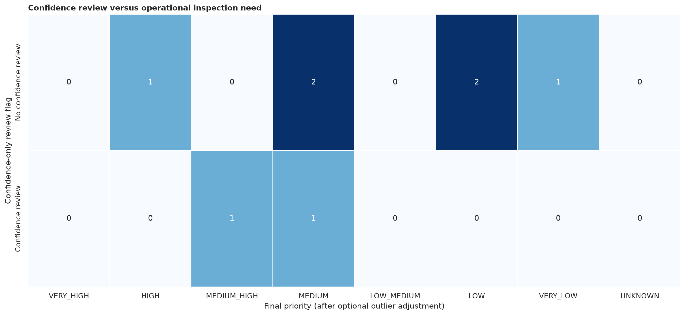
Top-Priority Parcel Inspection Queue
The queue follows final inspection priority, preserving input order within each band. It preserves the declared and predicted crops, all evidence components, check type, and human-readable reason codes required for parcel-level follow-up.
| parcel_code | label | label_prediction | prediction_confidence_level | data_reliability_score | geometry_risk | inspection_score | inspection_need | inspection_priority_label | inspection_rule | is_outlier | inspection_need_before_outlier | inspection_outlier_adjusted | prediction_class_reliability_level | inspection_class_reliability_applied | inspection_check_type | inspection_reasons |
|---|---|---|---|---|---|---|---|---|---|---|---|---|---|---|---|---|
| 2 | A | B | HIGH | 0.8200 | 0.5000 | 12.0000 | HIGH | High | R14 | True | MEDIUM_HIGH | True | MEDIUM | True | DECLARATION_CONFLICT | DECLARATION_CONFLICT|MEDIUM_GEOMETRY_COMPLEXITY|MEDIUM_CLASS_RELIABILITY|OUTLIER_PRIORITY_INCREASE |
| 7 | None | B | LOW | 0.4200 | 1.0000 | 89.5000 | MEDIUM_HIGH | Medium–High | NO_DECLARATION | True | MEDIUM | True | HIGH | False | INSUFFICIENT_EO_EVIDENCE | INSUFFICIENT_EO_EVIDENCE|LOW_MODEL_CONFIDENCE|LOW_DATA_RELIABILITY|HIGH_GEOMETRY_COMPLEXITY|NO_DECLARATION|OUTLIER_PRIORITY_INCREASE |
| 3 | B | B | MEDIUM | 0.7400 | 0.6250 | 45.8800 | MEDIUM | Medium | R10 | False | MEDIUM | False | HIGH | True | INSUFFICIENT_EO_EVIDENCE | INSUFFICIENT_EO_EVIDENCE|MEDIUM_MODEL_CONFIDENCE|MEDIUM_DATA_RELIABILITY|MEDIUM_GEOMETRY_COMPLEXITY |
| 4 | B | A | LOW | 0.5500 | 0.8750 | 84.3700 | MEDIUM | Medium | R19 | None | MEDIUM | False | MEDIUM | True | INSUFFICIENT_EO_EVIDENCE | DECLARATION_PREDICTION_DIFFERENCE|INSUFFICIENT_EO_EVIDENCE|LOW_MODEL_CONFIDENCE|LOW_DATA_RELIABILITY|HIGH_GEOMETRY_COMPLEXITY|MEDIUM_CLASS_RELIABILITY |
| 6 | C | A | MEDIUM | 0.6800 | 0.7500 | 49.2500 | MEDIUM | Medium | R20 | False | MEDIUM | False | HIGH | True | INSUFFICIENT_EO_EVIDENCE | DECLARATION_PREDICTION_DIFFERENCE|INSUFFICIENT_EO_EVIDENCE|MEDIUM_MODEL_CONFIDENCE|MEDIUM_DATA_RELIABILITY|HIGH_GEOMETRY_COMPLEXITY |
Saved Outputs
- Final Predictions Joblib
- Final Predictions Preview CSV
- Borda/Correctness Group Summary
- Confidence Metric Median Summary
- Need-to-Check by Predicted Class
- Confidence Component Matrix
- Need-to-Check Confusion Matrix
- Inspection Need Summary
- Inspection Check Type Summary
- Inspection Priority by Predicted Crop
- Declaration Conflict Matrix
- EO Evidence Quality Matrix
- Confidence Review Comparison
- Inspection Need by Declaration Status
- Inspection Score by Confidence and Data Reliability
- Top-Priority Parcel Queue
- EDA Outlier Priority Transitions